История города
История мира Hollow Knight повествует о давно заброшенном
королевстве насекомых Халлоунест, которое пало жертвой таин-
ственной инфекции, известной как "Зараза".
Бледный Король пытался остановить распространение чумы,
создав Священный Сосуд — Полого Рыцаря, чтобы он поглотил ин-
фекцию и чума наконец была обуздана, Халлоунест ещё некоторое
время процветал. Однако Полый рыцарь, по сути, не был полностью
пустым, в связи с чем Чума вскоре начала медленно, но верно вы-
рываться на свободу, повторно заражая граждан Халлоунеста. В
какой-то момент Бледный Король и весь Белый дворец исчезли,
оставив после себя лишь окрестности замка. Без своего правителя,
который мудро направлял жуков, Халлоунест вскоре пришёл в упадок,
и всё большее количество жуков заражалось Чумой. Теперь же
жители либо сошли с ума от одиночества, либо стали
бездумными оболочками, которые нападают на тех,
кто ещё не заражён.
В конце концов, отвергнутые и неиспользованные
Сосуды, к которым относится и рыцарь, стали
выбираться из Бездны и возвращаться в Халлоу-
нест, пытаясь разобраться с Чумой. Хорнет же выступает в
роли часового, проверяя Сосуды на силу и волю, чтобы увидеть,
способны ли они стать новым Полым рыцарем для Чумы, наводнившей
всё королевство Халлоунест.

Персонажи
Бледный Король
Правитель Халлоунеста и его король, запечатавший Лучезарность, дав всем жукам способность мыслить.

Каролинг
Охранник дворца Халлоунеста
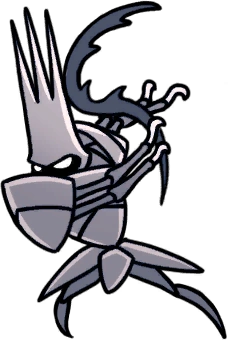
Старейшина
Старейшина — один из немногих выживших жителей Грязьмута.
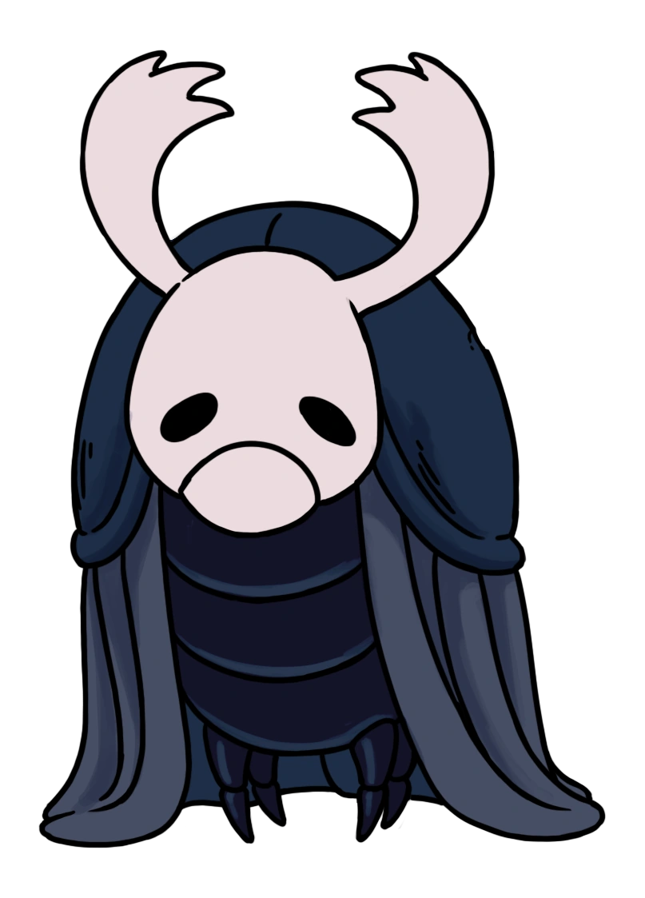
Зот Могучий
Странствующий "великий и могучий" воин, обладающий деревянным гвоздём и бесконечным высокомерием.
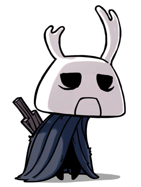
Бретта
Cтеснительный жучок, жительница Грязьмута

Изельда
Жительница Грязьмута, продает значки собственного изготовления и карты своего мужа Корнифера.
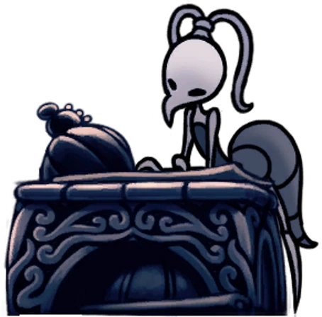
Корнифер
Картограф, путешествующий по Халлоунесту, который поселился в Грязьмуте.
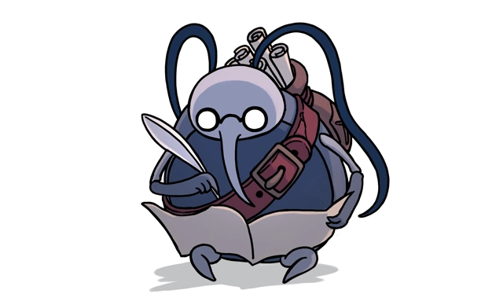
Кузнец гвоздей
Кузнец из Города Слёз. Мечтает выковать совершенный гвоздь.
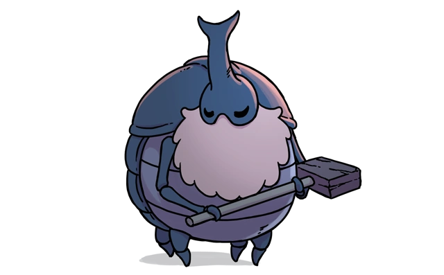
Лорды богомолов
Сестры, предводительницы Племени богомолов и искусные воительницы.
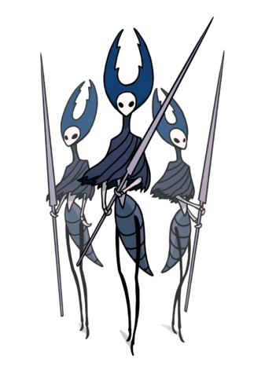
Лучезарность
Высшее существо света, похожего на Сущность, но гораздо ярче; также является прародителем рода мотыльков, который почитал свою создательницу.

Рыцарь
Один из отвергнутых Сосудов, существ, лучшее из которых должно было заточить в себе источник Чумы, наводнившей Халлоунест.

Хорнет
Защитница руин Халлоунеста, охраняющая земли от незваных гостей.
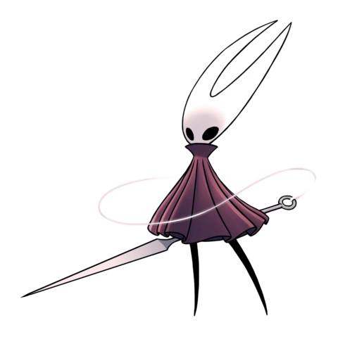
Рогач
Огромный жук-носорог, который перевозит Рыцаря по Вокзалам рогачей, расположенных по всему Халлоунесту.
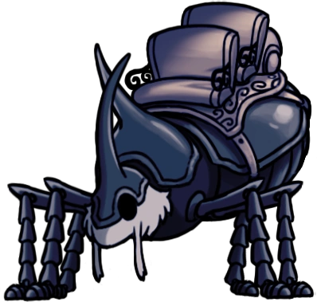
Улитка-шаман
Единственный живой представитель рода улиток-шаманов

Полый рыцарь
Взрослый Сосуд, носящий в своём теле сердце чумы.

Охотник
Закамуфлированное существо, имеющие бестиарий на большинство сущест
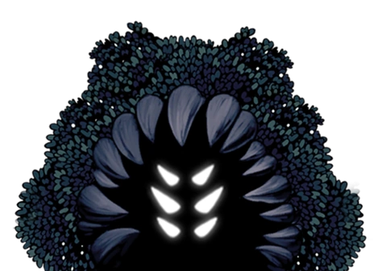
Карта
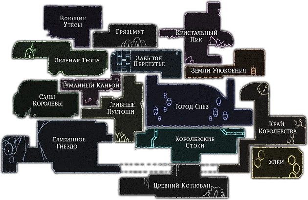